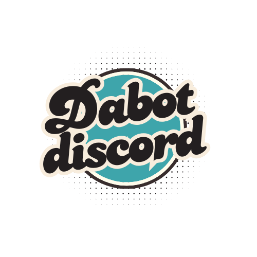

Your go-to assistant for weather, wisdom, and words.
THE BOT
SMART, ENGAGING, VERSATILE
Dabot is a project I started in the early 2020s when COVID first emerged, as Discord became an essential platform during the lockdown. My friends and I were looking for a fun and personalized bot to enhance our experience, so I created Dabot. Since then, it has evolved into a versatile tool that not only entertains but also helps users stay informed and connected in a unique way.
APIs
INTEGRATED, DYNAMIC, RESPONSIVE
With its seamless API integration, Dabot adapts to user interactions, providing dynamic responses to various needs. Whether users need to check the weather, engage in conversation, or translate messages, the bot is equipped to process requests efficiently, ensuring a smooth and responsive experience for all.
a PERSONAL TOUCH
CAPTURING, STORING, REVIVING MOMENTS
The creation of Dabot came from a desire to preserve the moments that made our group chat special. I built a bot-only-writable gallery called the "Museum" to capture photos and videos, turning our fleeting memories into something permanent. With a simple command, users could embed media, and an API would set the embed color to match the dominant tone of the image or video, adding a nostalgic, personal touch. What started as a fun way to relive memories quickly became a virtual museum where we could visit the past and keep those moments alive.